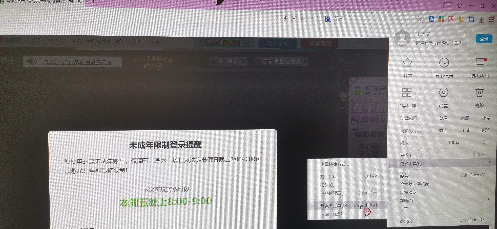
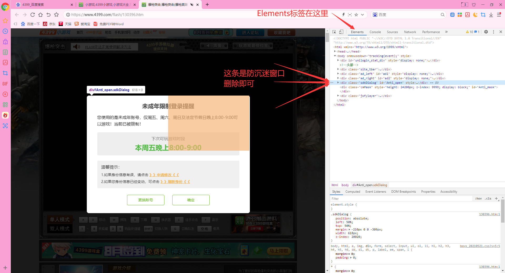
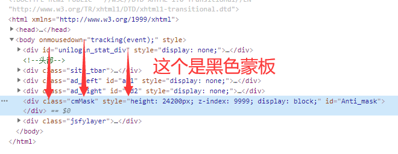
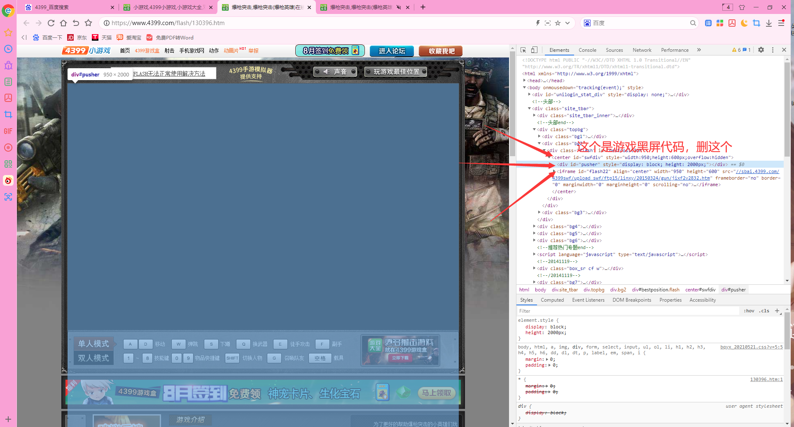
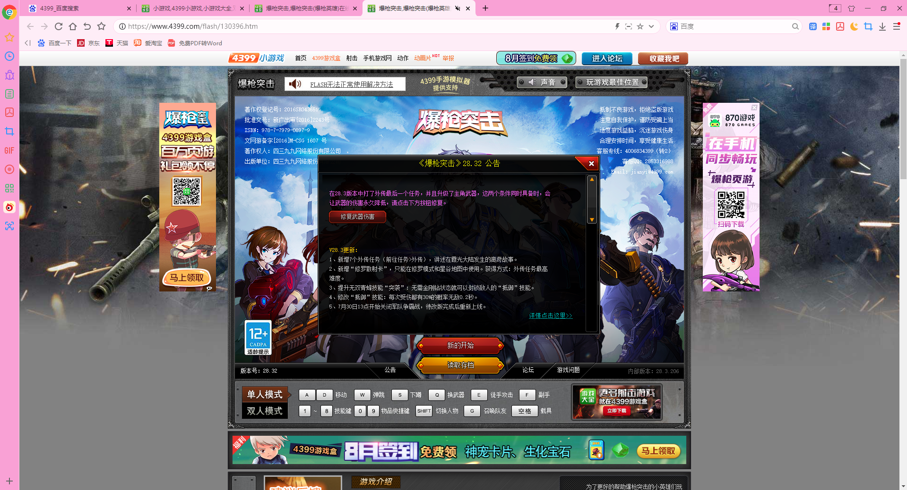
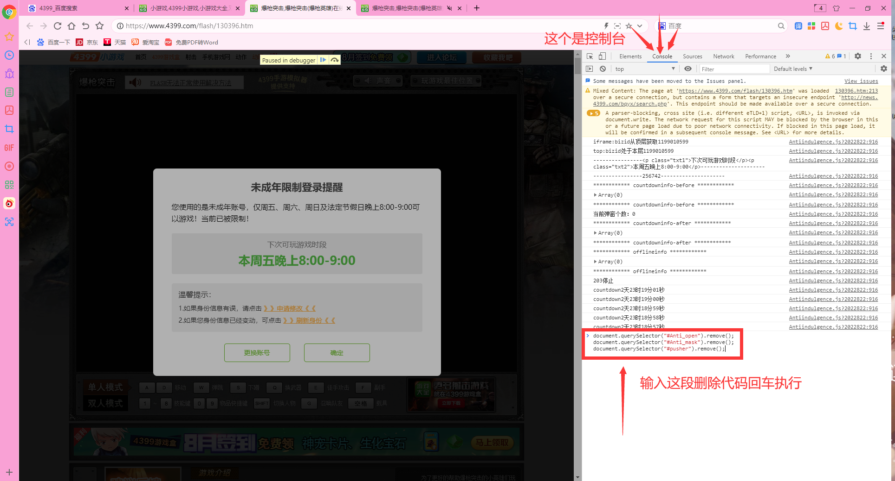

AoralsFout的小窝ヾ(^▽^*)))
『
』
利用审查元素删除4399防沉迷
最近闲来无事准备打开4399回忆童年qwq，可是为什么这玩意装了防沉迷 ？把我整不会了QAQ。如下图。

在过了一会时间后，页面竟然传来了游戏的背景音乐!这说明游戏是在运行的，也许可以利用审查元素给删掉。当我按下右键时，菜单竟然没有了，Ctrl Shift I 也无法调出开发者工具。4399你坏事做尽┗|｀O′|┛！最后我发现只要用浏览器上面的选项里面有开发者工具可以直接进。。。我用的双核浏览器，因为这个自带flash，Edge没flash。如图打开开发者工具。
进入开发者工具后进入了疯狂调试模式，别人的说法是用Ctrl+F8停掉断点。然后进入Elements标签(如果你的开发者工具是中文的，选元素标签)，我们发现防沉迷窗口是class="sdkDialog"的一段代码，直接选中按delete键删除，这时防沉迷窗口已经没有了，接下来处理背景黑色蒙板。
接着看代码，发现class为cmMask的一段代码，z-index设置成了9999，意思是显示在第9999层。后面id为Anti_mask,又是最上层又是anti的，非常可疑，删除这段代码，发现背景消失了，页面正常显示，但是游戏还是黑屏。
继续看代码，一个一个打开后发现游戏窗口最上方有一个class为pusher的代码，删除他以后发现游戏正常显示了！到此防沉迷全部删除。找不到代码的按Ctrl+F输入pusher自动定位代码位置。
 但是每次进游戏还要再一个一个删，清楚原理就可以用控制台代码直接删除，打开console（中文控制台）。输入以下代码。（记得Ctrl+F8停断点口苗）
document.querySelector("#Anti_open").remove();
document.querySelector("#Anti_mask").remove();
document.querySelector("#pusher").remove();
可以复制下来写在txt文件里保存，以后玩4399就可以控制台一键删除。
以上，这个代码对所有4399单机游戏适用，不适用在线游戏。因为我发现在线游戏在非游玩时段是不加载游戏的，所以按照上述方法删除防沉迷也无济于事。
但是！
你以为在线游戏没法破解码？当然可以（只适用一部分，像生死狙击直接内置在游戏里的防沉迷无法删除，所以还是有局限性），以美食大战老鼠为例。不过你要在8点到9点这个时间段登录游戏，这个时间段是可游玩时段，等到9点，它就弹出防沉迷窗口，此时游戏背景音乐还在响，所以系统并未强制停止游戏。这时使用老方法进入开发者工具，没有进入疯狂调试，所以无需按下Ctrl+F8停掉断点。进入elements标签，防沉迷窗口还是那个sdkDailog没有一丝丝改变，我直接删除好伐。
这次没有黑色蒙板，游戏直接黑屏，我们查看代码发现了这样一段代码
这里的样式里面有一个rgb(0,0,0)的代码，这个代码表示黑色，除了游戏的黑屏以外都都没有明显的黑色元素，肥肠滴可疑awa！删除之后你就会惊喜地发现这玩意就是游戏的黑屏，游戏还在运行！然后就可以开开心心玩咯awa。
我只知道美食大战老鼠可以删除，其他的游戏你们可以按照上面的思路自行尝试，话说4399防沉迷真就是个表面文章，平常爱用审查元素瞎搞的人都会删uwu。
©2022 - 2022 By AoralsFout